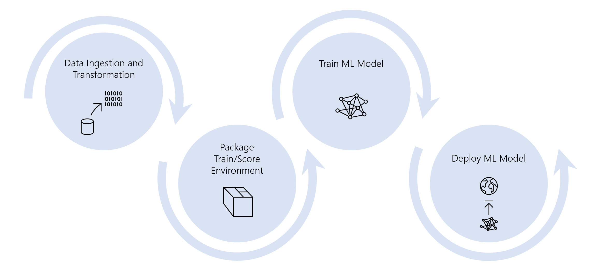
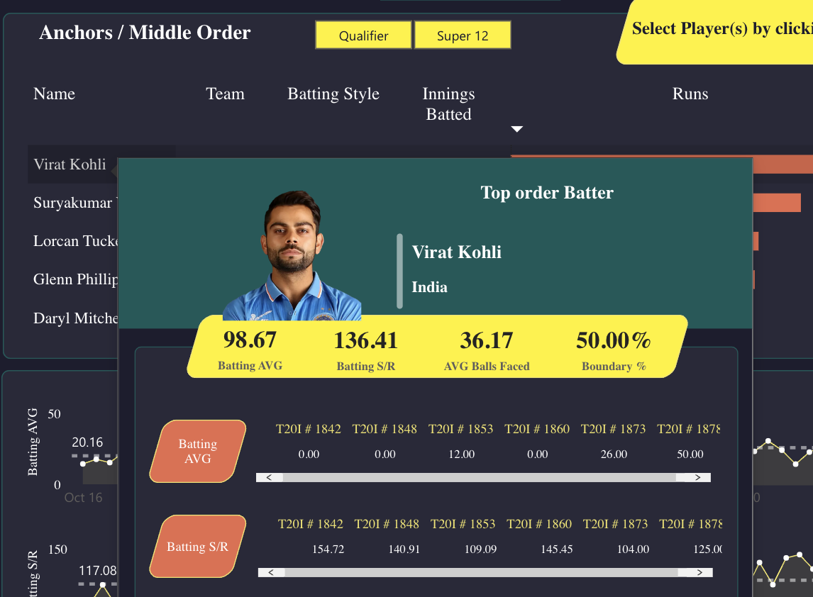
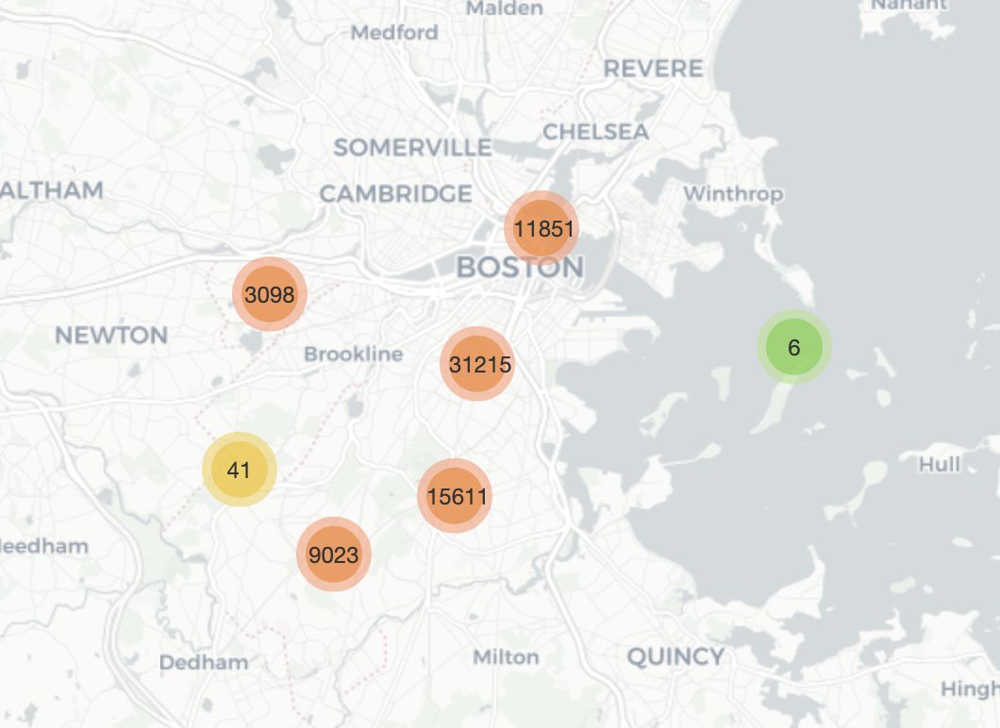
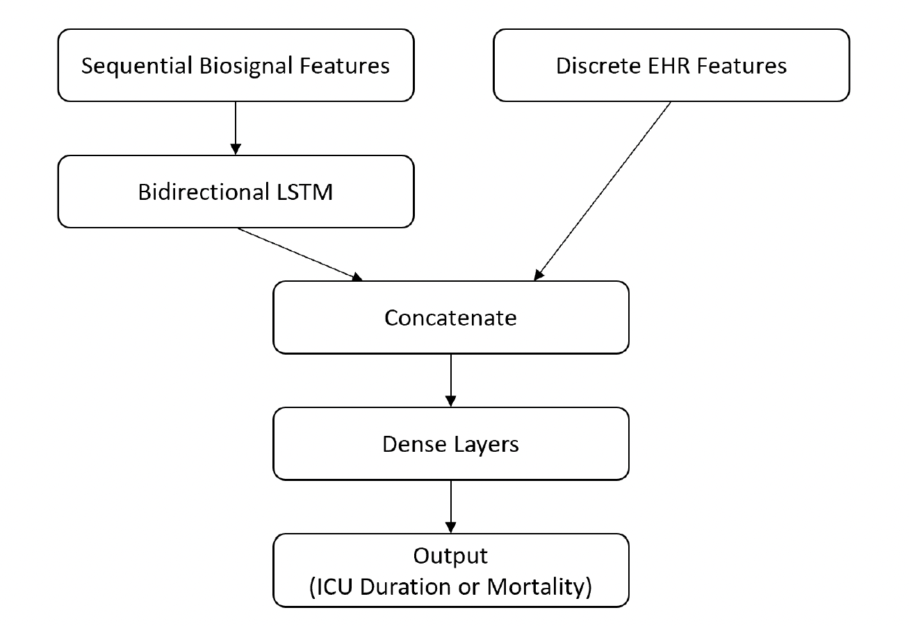

This project aims to develop an end-to-end machine learning model for analyzing student performance using various techniques like exploratory data analysis, feature engineering, and predictive analytics. The project also focuses on data cleaning, feature selection, and the implementation of logging and custom exception handling using Python. Moreover, version control using Git will be utilized throughout the project.


This project involves extracting and cleaning data from a large XML file with over 500,000 rows using R programming language and inserting it into a Relational Database model with a BCNF schema. A star schema with fact and dimensional tables was designed for analytical purposes, leading to a 6x improvement in query run time. AWS RDS and MySQL databases were utilized for the project.

This project involves creating a Power BI dashboard that displays the top 5 performers in various categories for the T20 world cup of 2022, including Powerhitters, anchors, middle order, all-rounders, and pacers. The data was obtained from ESPN Cricinfo and transformed using pandas and NumPy libraries, with Power Query used to filter and adjust data types, and DAX used to create KPIs for evaluation.

This project involves analyzing crime in Boston using data from 2015-2021, totaling 800,000 rows. After integrating and cleaning the data, feature engineering was performed to improve analysis, followed by the creation of interactive map plots using the folium library. Time series models such as ARIMA and SARIMA were then utilized to predict crime occurrences for 2022.

This project aims to develop machine learning models using the VitalDB dataset to predict patient outcomes, including diagnoses, anesthesia duration, ICU length of stay, and mortality rate, to help hospitals plan resources more effectively. The project outlines the challenges faced in developing accurate and generalizable models in healthcare, as well as the methods used to improve model performance.
In this project, I aimed to improve my data science and machine learning skills by working with various Kaggle datasets. The project included predicting the survival rate of the Titanic incident, estimating delivery time for DoorDash orders, and analyzing personal email account data.

This project involves building a Tableau dashboard that provides insightful visualizations about Airbnb listings in Seattle. The dashboard presents information such as revenue growth, regional counts, and the impact of the number of bedrooms on price in the Seattle area.